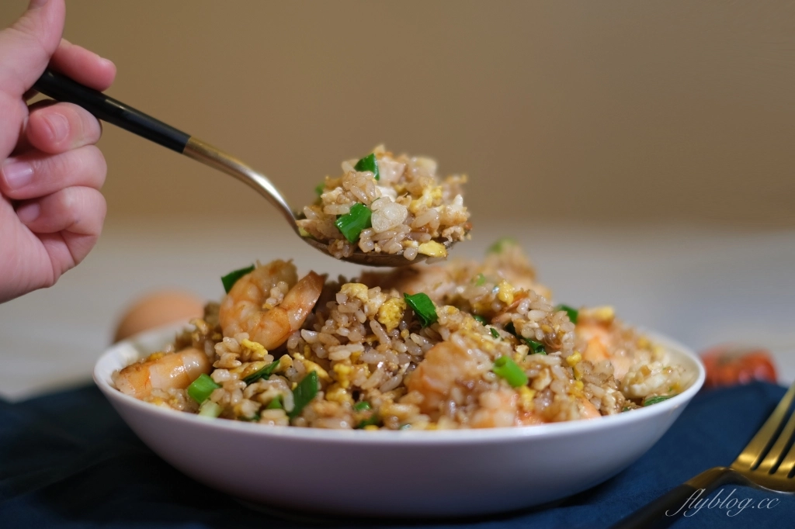

起油鍋，油熱了之後加入蛋，在鍋中用鍋鏟快速攪拌至凝固。
加入蒜末炒香之後再加入蝦仁。
再放入白飯，將白飯翻炒至米飯鬆散開。
加入醬油、鹽和黑胡椒炒勻後，起鍋前再加入蔥花拌勻。
起鍋。
 資料來源：飛天璇的口袋
熱鍋，倒入適量沙拉油，加入作法1的蛋液炒散撈起備用。
於作法2原鍋中，加入奶油融化後，放入蒜末、薑末炒香，放入作法1的洋蔥末炒軟。
於作法3鍋中加入作法1的透抽鬚、蝦仁拌炒一下，加入白飯、混合的調味料A炒散，
再淋入白酒拌炒至米飯鬆散，加入青江菜段與作法2的蛋炒勻即可。
資料來源：龜甲萬